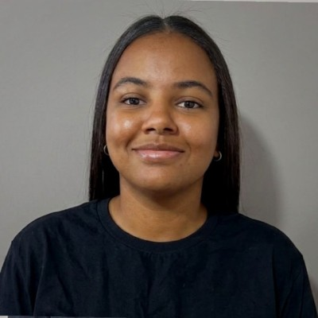
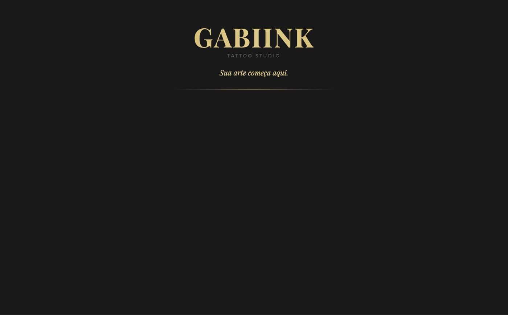
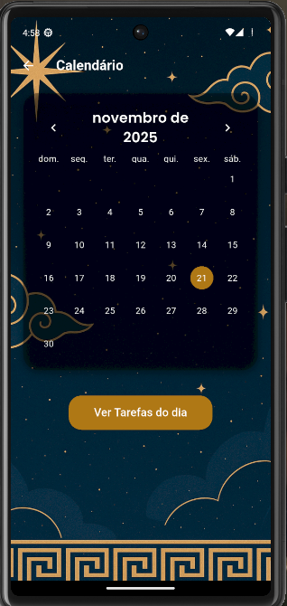
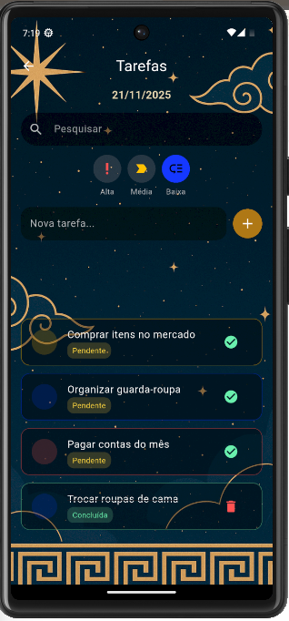

Olá, eu sou
Kalyta Rodrigues de Almeida
Passagem por UX Design e automação de dados. Gosto de pegar um problema real e levar até uma tela funcional — de um SaaS de gestão a um app de tarefas.

Um pouco da minha trajetória em tecnologia.
Sou desenvolvedora há 2 anos, atualmente Assistente de Sistemas e estudante de Análise e Desenvolvimento de Sistemas. Trabalho com JavaScript, Node.js e Flutter no desenvolvimento de aplicações, e também atuo como freelancer em UX Design e em automação/visualização de dados com Python e Power BI. TI se tornou minha paixão desde muito jovem — gosto de projetos que resolvem um problema real de alguém, não só exercícios de curso.
Como posso ajudar no seu projeto.
Sites institucionais, landing pages e aplicações com JavaScript e Node.js, do zero ao deploy.
Aplicativos multiplataforma com Flutter/Dart, focados em usabilidade e performance.
Prototipação e design de interfaces no Figma, com foco no fluxo real de uso.
Extração, tratamento e visualização de dados com Python e Power BI.
Uma seleção de trabalhos próprios e para clientes.

Site institucional para estúdio de tatuagem, com portfólio de trabalhos e contato direto pelas redes sociais. Desenvolvido para uma cliente real.
Ver site ao vivo →Painel administrativo multi-tenant para gestão de estoque, vendas, caixa e relatórios, com controle de planos por cliente (MRR, status, vencimento).
Prévia recriada com dados fictícios — projeto contém dados reais de cliente e não é exibido publicamente.

App de gerenciamento de tarefas diárias organizado por calendário, com prioridades, busca e animações de lista.
Ver no GitHub →Painel pessoal de organização de estudos, com trilhas, metas diárias/semanais e acompanhamento de progresso por área.
Prévia recriada com dados fictícios — projeto contém anotações pessoais e não é exibido publicamente.Sistema interno de gestão de projetos e checklists, com acompanhamento de etapas, prazos e histórico de atividades.
Prévia recriada com dados fictícios — projeto contém dados reais de cliente e não é exibido publicamente.Plataforma de controle de projetos com dashboard, gestão de reuniões, etapas, diário de projeto e autenticação de usuários (NextAuth).
Ver no GitHub →Tecnologias e ferramentas que uso no dia a dia.
Tem um projeto em mente? Fale comigo por qualquer um dos canais abaixo.